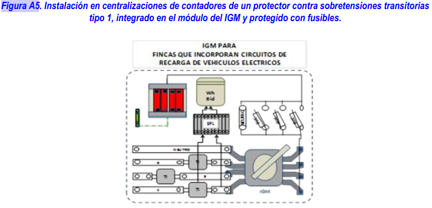

6. PROTECCIÓN PARA GARANTIZAR LA SEGURIDAD.¶
6.1 Medidas de protección contra contactos directos e indirectos.¶
Las medidas generales para la protección contra los contactos directos e indirectos serán las indicadas en la (ITC) BT-24 teniendo en cuenta lo indicado a continuación.
El circuito para la alimentación de las estaciones de recarga de vehículos eléctricos deberá disponer siempre de conductor de protección, y la instalación general deberá disponer de toma de tierra.
En este tipode instalaciones se admitirán exclusivamente las medidas establecidas en la (ITC) BT-24 contra contactos directos según los apartados 3.1, protección por aislamiento de las partes activas, o 3.2, protección por medio de barreras o envolventes, así como las medidas protectoras contra contactos indirectos según los apartados 4.1, protección por corte automático de la alimentación, 4.2, protección por empleo de equipos de la clase II o por aislamiento equivalente, o 4.5, protección por separación eléctrica.
Cualquiera que sea el esquema utilizado, la protección de las instalaciones de los equipos eléctricos debe asegurarse mediante dispositivos de protección diferencial. Cada punto de conexión deberá protegerse individualmente mediante un dispositivo de protección diferencial de corriente diferencial-residual asignada máxima de 30 mA, que podrá formar parte de la instalación fija o estar dentro del SAVE.Con objeto de garantizar la selectividad la protección diferencial instalada en el origen del circuito derecarga colectivo será selectiva o retardada con la instalada aguas abajo.
Los dispositivos de protección diferencial serán de clase A. Los dispositivos de protección diferencial instalados en la vía pública estarán preparados para que se pueda instalar un dispositivo de rearme automático y los instalados en aparcamientos públicos o en estaciones de movilidad eléctrica dispondrán de un sistema de aviso de desconexión o estarán equipados con un dispositivo de rearme automático.
Warning
Salvo cuando la proteccióncontra contactos indirectos se realiza por separación eléctrica, cada punto de conexión debe estar protegido mediante su propio diferencial que será como mínimo de tipo A, con una corriente diferencial residual no superior a 30 mA. Los dispositivos de protección diferencial deberían cumplir con una de las siguientes normas de producto: EN 61008-1, EN 61009-1, EN 60947-2 o EN 62423.
Cuando la estación de carga de vehículos eléctricos esté equipada con una toma de corriente o un conector de vehículo según la serie de Normas EN 62196 (previstas para recarga en modo 3), la normalización internacional más reciente (véase UNE-HD 60364-7-722) requiere de medidas contra las corrientes de fuga con componente en corriente continua, salvo cuando estas medidas estuvieran incluidas en la propia estación de carga de vehículos eléctricos. Las medidas apropiadas, para cada punto de conexión pueden ser:
- Utilización de diferenciales de tipo B; o
- Utilización de diferenciales de tipo A y un equipo que asegure la desconexión de la alimentación en caso de corrientes de defecto con componente en continua superior a los 6 mA (dispositivo de detección de corriente diferencial continua (RDC-DD)) conforme con la norma IEC 62955.
6.2 Medidas de protección en función delas influencias externas.¶
Las principales influencias externas a considerar en este tipo de instalaciones son:
- Para las instalaciones en el exterior: penetración de cuerpos sólidos extraños, penetración de agua, corrosión y resistencia a los rayos ultravioletas.
- Para instalaciones en aparcamientos o estacionamientos públicos, privados o en vía pública: competencia de las personas que utilicen el equipo.
- En todos los casos, el daño mecánico.
- El proyectista deberá prestar especial atención a las influencias externas existentes en el emplazamiento en el que se ubique la instalación a fin de analizar la necesidad de elegir características superiores o adicionales a las que se prescriben en este apartado.
- Cuando la estación de recarga esté instalada en el exterior, los equipos deben garantizar una adecuada protección contra la corrosión. Para ello se tendrán en cuenta las prescripciones que se incluyen en la (ITC) BT 30.
- Los grados de protección contra la penetración de cuerpos sólidos y acceso a partespeligrosas, contra la penetración del agua y contra impactos mecánicos de las estaciones de recarga podrán obtenerse mediante la utilización de envolventes múltiples proporcionando el grado de protección requerido el conjunto de las envolvente completamente montadas. En este caso, en la documentación del fabricante de la estación de recarga deberá estar perfectamente definido el método para la obtención de los diferentes grados de protección IP e IK.
6.2.1 Grado de protección contra penetración de cuerpos sólidos y acceso a partes peligrosas.¶
Cuando la estación de recarga esté instalada en el exterior las canalizaciones deben garantizar una protección mínima IP4X o IPXXD.
Las estaciones de recarga y otros cuadros eléctricos tendrán un grado de protección mínimo IP4X o IPXXD para aquellas instaladas en el interior e IP5X para aquellas instaladas en exterior. El grado de protección especificado para la estación de recarga no aplica durante el proceso de recarga.
Warning
El grado de protección establecidopara la estación de recarga no resulta extensible a la base de toma de corriente o conector tipo 2, siempre que exista un elemento de corteen la estación de carga que impida su alimentación cuando el vehículo no está conectado. Por este motivono es necesario el uso de obturadores para las bases de toma de corriente o conectores tipo 2 o Combo 2, aunque se recomiendan cuando se prevea su usopor personal no conocedor de los riesgos del manejo de la electricidad.
6.2.2 Grado de protección contra la penetración del agua.¶
Cuando la estación de recarga esté instalada en el exterior, la instalación debe realizarse de acuerdo a lo indicado en el capítulo 2 de la (ITC) BT-30, garantizando, por tanto para las canalizaciones un IPX4.
Las estaciones de recargay otros cuadros eléctricos asociados tendrán un grado de protección mínimo IPX4. Cuando la base de toma de corriente o el conector no cumpla con el grado IP anterior, éste deberá proporcionarlo la propia estación de recarga mediante su diseño. El grado deprotección especificado para la estación de recarga no aplica durante el proceso de recarga.
6.2.3 Grado de protección contra impactos mecánicos.¶
Los equipos instalados en emplazamientos en los que circulen vehículos eléctricos deberán protegerse frentea daños mecánicos externos del tipo impacto de severidad elevada (AG3). La protección del equipo se garantizará a través de alguno de los medios siguientes:
- a)Emplazando el material eléctrico en una ubicación en la que éste no se encuentre sujeto a un riesgo de impacto previsible;
- b)Disponiendo algún tipo de protección mecánica adicional en aquellas zonas en las que el equipo se encuentre sujeto al riesgo de impacto;
- c)Seleccionando el material eléctrico con un grado de protección contra daños mecánicos de acuerdo con lo especificado en los apartados 6.2.3.1 y 6.2.3.2;
- d)Usando la combinación de alguna o todas las medidas anteriores.
6.2.3.1. Grado de protección de las envolventes.¶
Cuando la protección del equipo eléctrico frente a daños mecánicos se garantice mediante envolventes, una vez instaladas deberán proporcionar un grado de protección mínimo IK08 contra impactos mecánicos externos.
El cuerpo de las estaciones de recarga y otros cuadros eléctricos ubicados en el exterior tendrán un grado de protección mínimo contra impactos mecánicos externos de IK10. El cuerpo de las estaciones de recarga excluye partes tales como teclado, leds, pantallas o rejillas de ventilación. El grado de protección especificado para la estación de recarga no aplica durante el proceso de recarga.
6.2.3.2 .Grado de protección de las canalizaciones.¶
Cuando las canalizaciones se instalen en una ubicación sujeta a riesgo de daños mecánicos, tales como áreas de circulación de vehículos eléctricos, éstas presentarán una resistencia adecuada a los daños mecánicos. En estos casos, los tubos presentarán una resistencia mínima al impacto grado 4 y una resistencia mínima a la compresión grado 5. Si se utilizan canales protectoras, éstas presentarán una resistencia mínima IK08 a impactos mecánicos.
En otros sistemas de conducción que no aporten protección mecánica a los cables, la protección se garantizará mediante el uso de medios mecánicos adicionales, por ejemplo mediante la utilización de cables armados.
Warning
Cuando el proyectista considere que existe un riesgo importante de choquede los vehículos contralacanalización ésta deberá tener una mayor resistencia al impacto
- En el caso de tubos, resistencia mínima al impacto grado 5 según UNE-EN 61386.
- En el caso de canales, resistencia al impactode 20 J según UNE-EN 50085
6.3 Medidas de protección contra sobreintensidades¶
Los circuitos de recarga, hasta el punto de conexión, deberán protegerse contra sobrecargas y cortocircuitos con dispositivos de corte omnipolar, curva C, dimensionados de acuerdo con los requisitos de la (ITC) BT 22.
Cada punto de conexión deberá protegerse individualmente. Esta protección podrá formar parte de la instalación fija o estar dentro del SAVE.
En instalaciones previstas para modo de carga 1 ó 2 en las que el punto de recarga esté constituido por tomas de corriente conformes con la norma UNE 20315, el interruptor automático que protege cada toma deberá tener una intensidad asignada máxima de 10 A, aunque se podrá utilizar una intensidad asignada de 16 A, siempreque el fabricante de la base garantice que queda protegida por este interruptor automático en las condiciones de funcionamiento previstas para la recarga lenta del VEHÍCULO ELÉCTRICO con recargas diarias de 8 horas, a la intensidad de 16A.
En las instalaciones previstas para modo de carga 3 la selección del interruptor automático que protege el circuito que alimenta la estación de recarga garantizará la correcta protección del circuito, evitando al mismo tiempo el disparo intempestivo de la protección durante el proceso de recarga. Para su selección se puede utilizar como referencia la documentación del fabricante de la estación. La tolerancia de la señal correspondiente a la intensidad de carga, el consumo interno de la propia estación de recarga y las condiciones ambientales de instalación, justifican que la intensidad asignada del interruptor automático sea en algunos casos superior a la suma de intensidades asignadas que pueden suministrar los puntos de conexión de la estación de recarga.
6.4 Medidasde protección contra sobretensiones.¶
Todos los circuitos deben estar protegidos contra sobretensiones temporales y transitorias. Los dispositivos de protección contra sobretensiones temporales estarán previstos para una máxima sobretensión entre fase y neutro hasta 440V. Los dispositivos de protección contra sobretensiones temporales deben ser adecuados a la máxima sobretensión entre fase y neutro prevista.
Warning
En el caso en que la máxima sobretensión prevista entre fase y neutro sea 440V los dispositivos contra sobretensiones temporales deben cumplir con la Norma UNE-EN 50550.El dispositivo de protección contra sobretensiones temporales puede instalarse en el circuito de recarga, junto a la estación de recarga o dentro de ella.
Los dispositivos de protección contra sobretensiones transitorias deben ser instalados en la proximidad del origen de la instalación o en el cuadro principal de mando y protección, lo más cerca posible del origen de la instalación eléctrica en el edificio. Según cuál sea la distancia entre la estación de recarga y el dispositivo de protección contra sobretensiones transitorias situado aguas arriba, puede ser necesario proyectar la instalación con un dispositivo de protección contra sobretensiones transitorias adicional junto a la estación de recarga. En este caso, los dos dispositivos de protección contra sobretensiones transitorias deberán estar coordinados entre sí.
Con el fin de optimizar la continuidad de servicio en caso de destrucción del dispositivo de protección contra sobretensiones transitorias a causa de una descarga de rayo de intensidad superior a la máxima prevista, cuando el dispositivo de protección contra sobretensiones no lleve incorporada su propia protección, se debe instalar el dispositivo de protección recomendado por el fabricante, aguas arriba del dispositivo de protección contra sobretensiones, con objeto de mantener la continuidad de todo el sistema, evitando así el disparo del interruptor general.
Warning
Se recomienda instalar una protección contra sobretensiones transitorias de tipo 1aguas arriba del contador principal, instalando dicho protector bien en la caja de protección y medida, CPM,en el caso de suministros individuales, o bienjunto al interruptor general de maniobra, IGM,situado a la entrada de la centralización de contadores. En la figura A5 se representa, a modo de ejemplo, la instalación de un protector contra sobretensiones transitorias tipo 1, integrado en el módulo del IGM y protegido mediante fusibles.

Según la norma UNE-CLC/TS 61643-12 "Dispositivos de protección contra sobretensiones transitorias de baja tensión. Parte 12: Dispositivos de protección contra sobretensiones transitorias conectados a sistemas eléctricos de baja tensión. Selección y principios de aplicación", cuando la distancia entre la estación de recarga y el dispositivo de protección contra sobretensionestransitorias situado aguas arriba seasuperior o igual a 10 metros es recomendable instalar un dispositivo adicional de protección contra sobretensiones transitorias, tipo 2, junto a la estación de recarga o dentro de ella.